TASKBAR HERO · RECORDING BUILD v5-m2.14Guard the last lit café
A judge-path walkthrough captured from the running game: café, Collection, a street wave, the three cat ultimates against the Yarn Giant, victory, the reward receipt and a live read from Avalanche Fuji. Every image is a screenshot of the real build at 1x speed, in a muted headless Chromium at 1280×720.
3cats: Mochi, Clover, Soot
3five-beat ultimates
Fujilive RPC read
0page errors
01The café
Lantern Cat Café. Mochi (melee), Clover (healer) and Soot (ranged) guard the last lit café from the Tangle.
02Collection
The twelve companions. Relics are minted on Avalanche Fuji as ERC-1155 tokens.
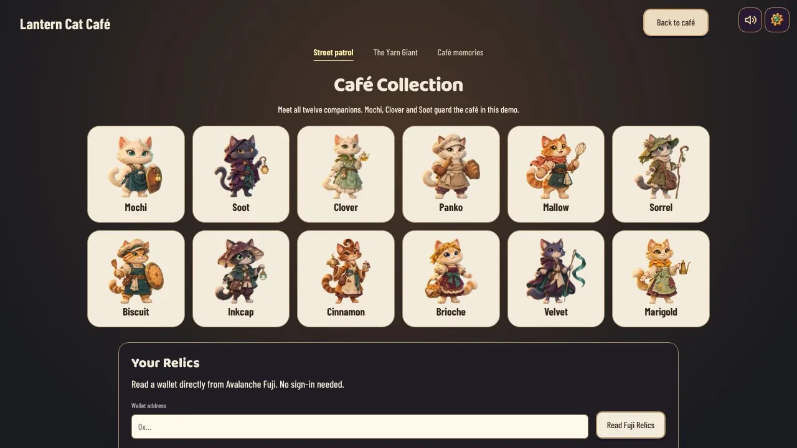
03Street wave
All three cats play their designer idles against Needle Moth, Teacup Healer and Button Guard.
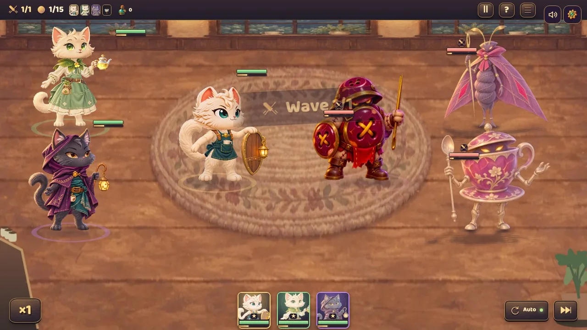
04Skills in the wave
Skills and hit effects resolve at 1x speed, with no clock or combat overrides.
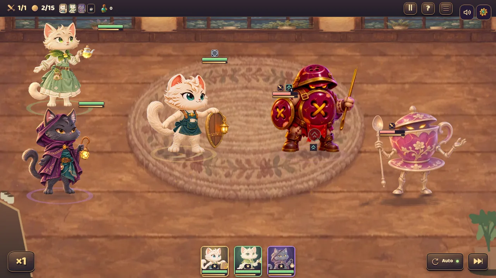
05Wave cleared
The street is clear. The Yarn Giant waits beyond the lanterns.
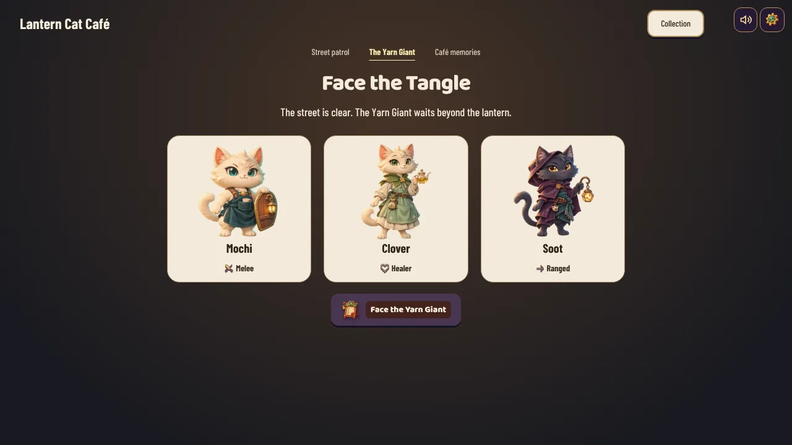
06The Yarn Giant
The boss fight opens.
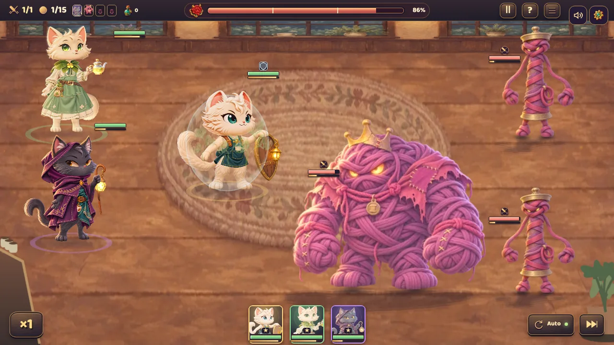
07Mochi ultimate: wind-up
Mochi's five-beat ultimate begins.
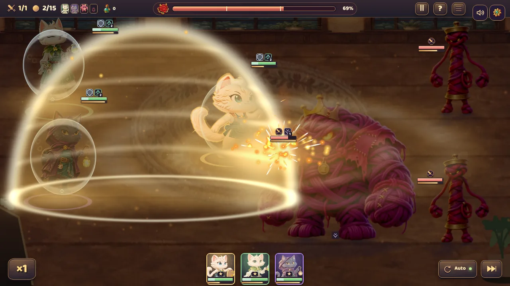
08Mochi ultimate: impact
Mochi's ultimate lands on the Giant.
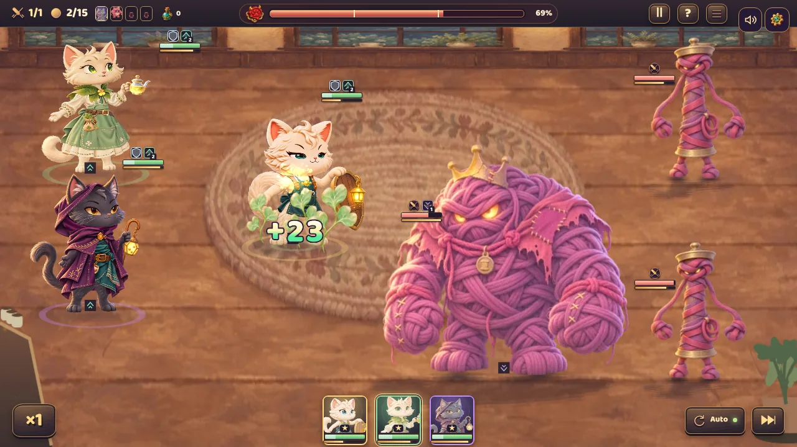
09Clover ultimate: wind-up
Clover's five-beat ultimate begins.
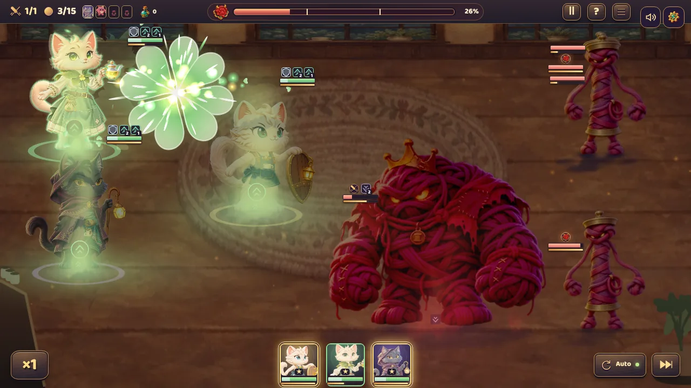
10Clover ultimate: impact
Clover's ultimate resolves on the squad and the Giant.
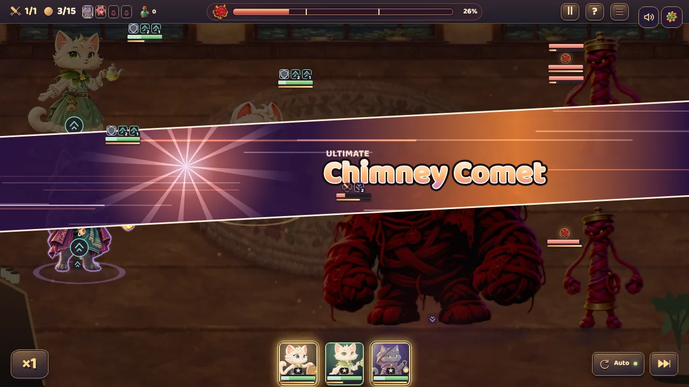
11Soot ultimate: wind-up
Soot's five-beat ultimate begins.
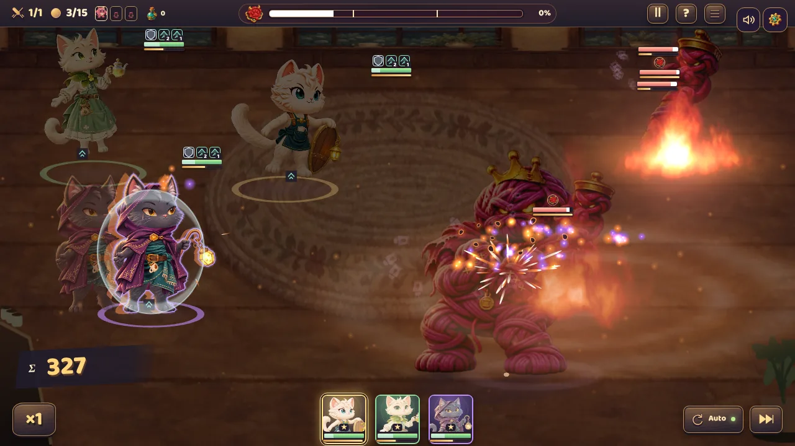
12Soot ultimate: impact
Soot's ultimate lands on the Giant.
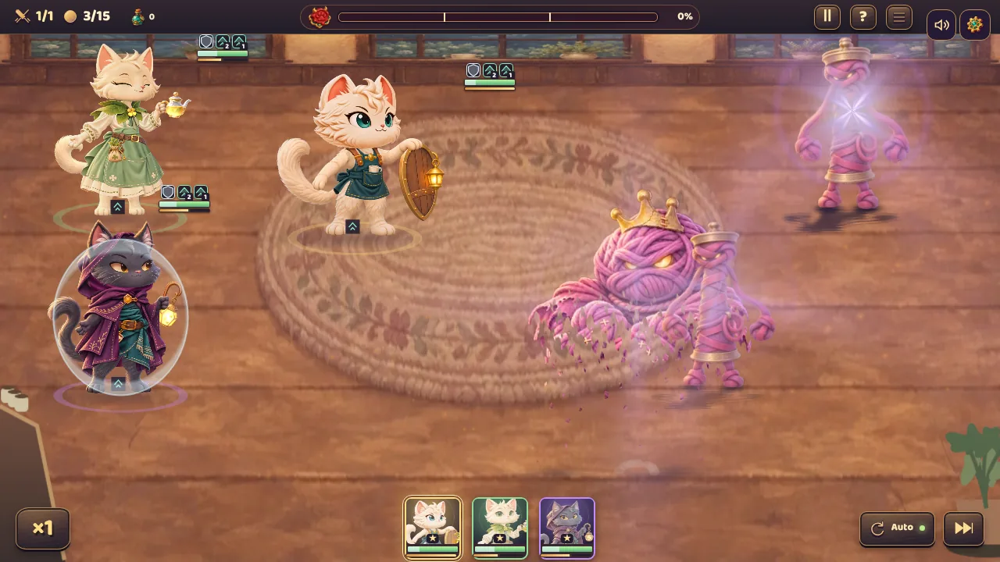
13Victory
The last lantern stays lit.
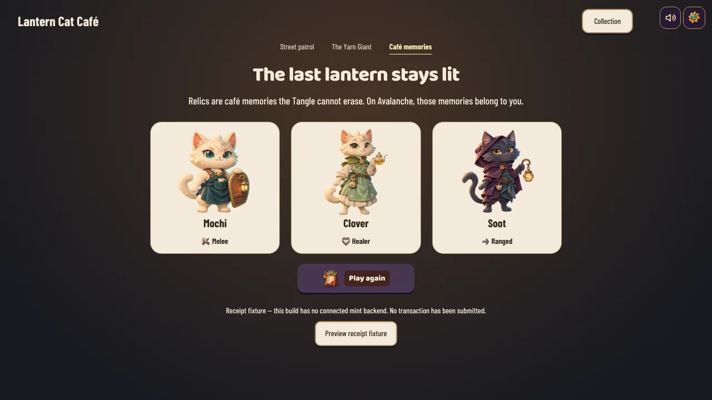
14Reward receipt
A labelled fixture receipt. No transaction is claimed and no explorer link is shown.
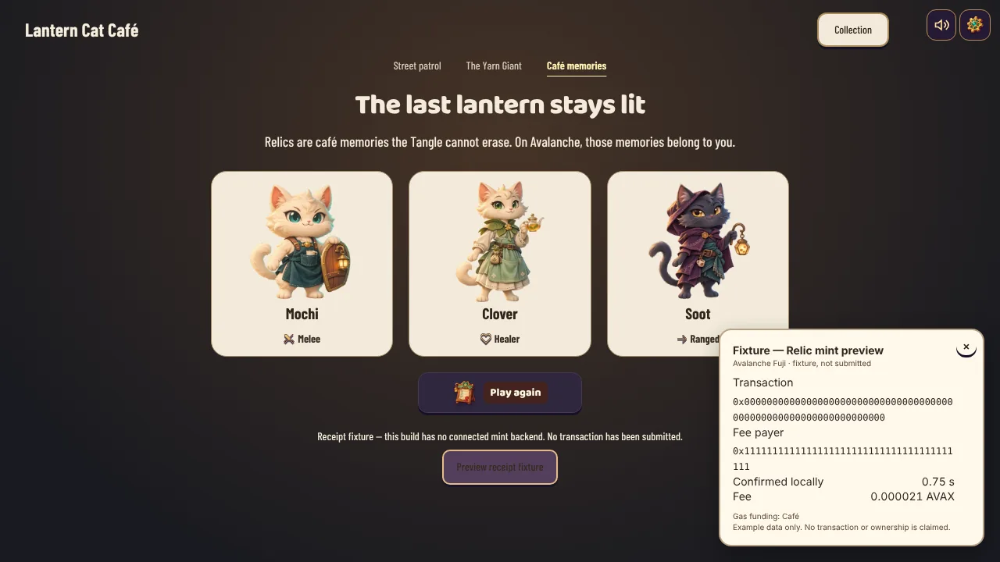
15Live Fuji read
The Collection reads a wallet directly from the Avalanche Fuji RPC, with no sign-in or backend.
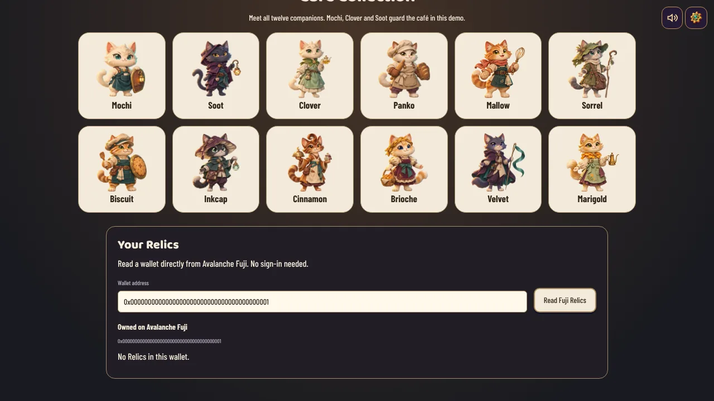
Run it yourself. From the repository root:
pnpm install --frozen-lockfile, then
node tools/v5int/run-chain-mode.mjs --fixture, and open
http://127.0.0.1:6301/?demo=1&squad=1&cardrpg2=1&a6=1&ui=v3. To regenerate these images and a video, run
node tools/v5int/v9-demo-record.mjs while the server is up. Contracts, tokenomics and the economy model are described in the
README and
ECONOMY.md.